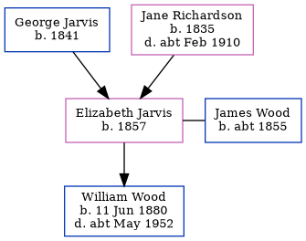

Elizabeth Jane Wood (née Jarvis) 1857 -
[ Home ] | [ Calendar ] | [ Surnames Index ] | [ Family History ]The child of George Jarvis and Jane Richardson, Elizabeth Jarvis was born in London, England in 1857<span class="citation">1,2</span> and married James Wood (with whom she had 1 child, William Henry) on St Mary's Church, Battersea Church Road, Battersea, London on Jul 16, 1876<span class="citation">3</span>. On Apr 2, 1871, she lived on Europa Cottage, Church Road, Battersea, London<span class="citation">1</span>.
Parents
- George was born in 1841
- Jane was born in 1835
Children
- William Henry was born on Jun 11, 1880
Citations
- 1871 England, Wales & Scotland Census - Findmypast (was age 14 and the daughter of the head of the household)
- England Marriages 1538-1973 - Findmypast
- England & Wales Marriages 1837-2005 - Findmypast
Media
England & Wales marriages 1837-2005 - BMD/M/1876/3/AZ/000147/251
England Marriages 1538-1973 - R_843164701/2
England Marriages 1538-1973 - R_853659878/2
1871 England, Wales & Scotland Census - GBC/1871/0004299991
Family Tree
Generated by Ged2Site. Last updated on Jul 20, 2025